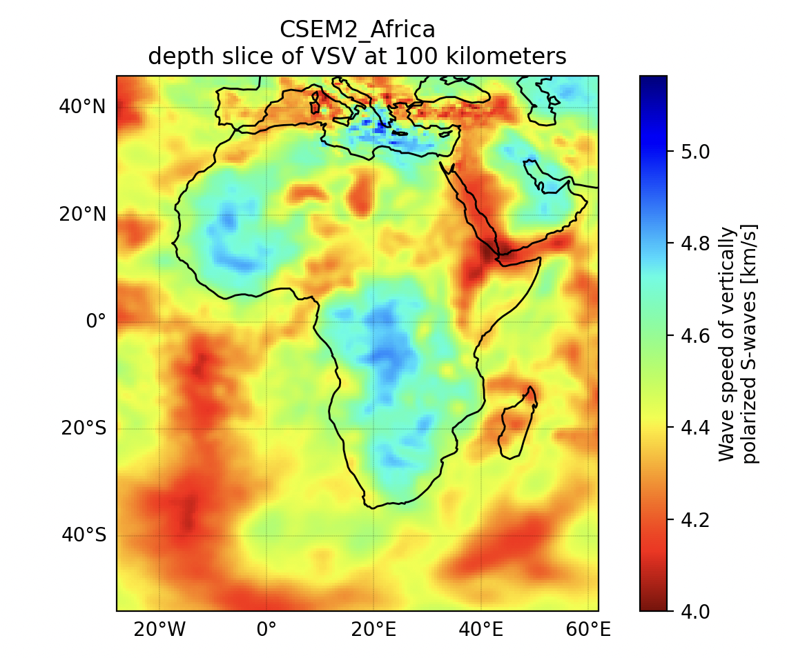
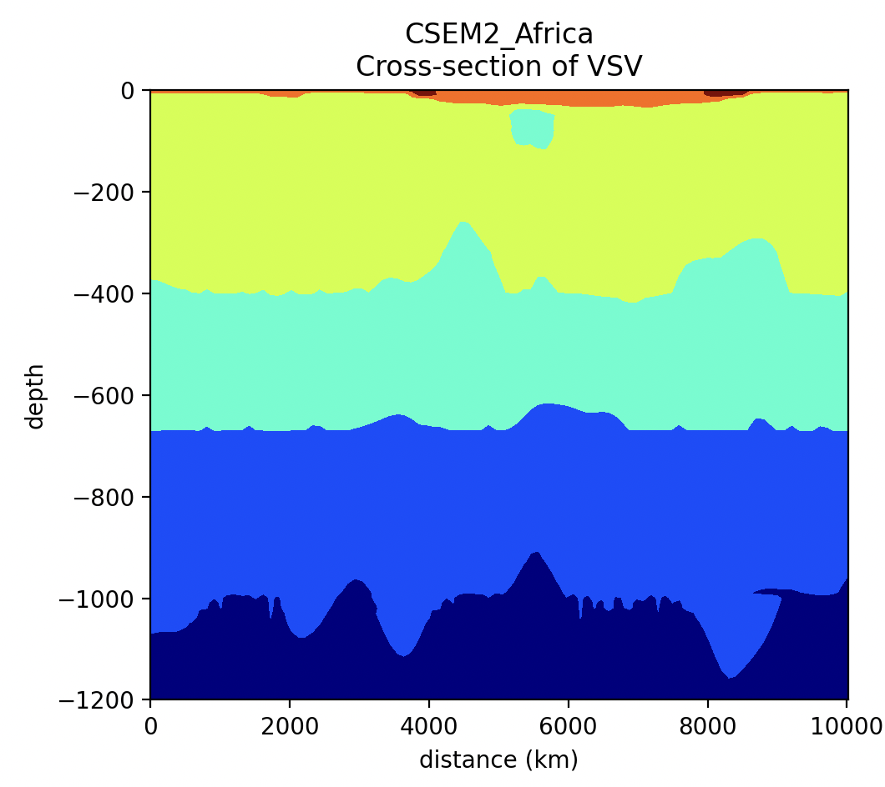

EMC Explorer User Guide¶
Introduction¶
The EMC Explorer is an interactive command-line tool for exploring, visualizing, and exporting Earth model data from NetCDF files. It supports:
- Metadata inspection
- 2D surface plotting
- Depth slices
- Cross-sections
- Geographic map rendering
- Data export in NetCDF, CSV, and GeoCSV formats
1. Quick Start¶
# Run the tool
python src/emc_explorer.py -i samples/CSEM2-Africa.v2024.12.01.r0.0-n4c.nc
You will see an interactive menu where you can choose tools and actions.
2. Navigation Basics¶
At each step, you will be prompted with available actions.
[TIP] Type 'h' for hints at any prompt.
[TIP] Press Enter to accept default values (if provided)
Choose an option
----------------
- meta — view file metadata
- range — show variable ranges
- subset — volume / slice / xsection / surface
- map — show coverage map
- help — usage
- exit — quit
[data] select option [meta, range, subset, map, help, exit | h]?
2.1 Metadata Inspection (meta)¶
Lists dataset-level attributes and variable metadata.
[data] select option [meta, range, subset, map, help, exit | h]?
exit Quit the tool
help Print usage text
map Show coverage map (if lat/lon available)
meta View global attributes, coords, and variables <------ 2.1
range Show min/max for coords and variables <------ 2.2
subset Enter sub-menu: volume/slice/xsection/surface
[data] select option [meta, range, subset, map, help, exit | h]? meta
========================================================================
Metadata (3D)
========================================================================
Global attributes (geospatial*)
-------------------------------
• geospatial_lat_units: degrees_north
• geospatial_lat_resolution: 2.0
• geospatial_lon_units: degrees_east
• geospatial_lon_resolution: 2.0
• geospatial_vertical_units: km
• geospatial_vertical_positive: down
• geospatial_lat_min: -54.0
• geospatial_lat_max: 46.0
• geospatial_lon_min: -28.0
• geospatial_lon_max: 62.0
• geospatial_vertical_min: 0
• geospatial_vertical_max: 1200
Coordinate Variables
--------------------
depth:
...
2.2 Range Inspection (range)¶
Show min/max for coords and variables.
[data] select option [meta, range, subset, map, help, exit | h]? range
========================================================================
Ranges (3D)
========================================================================
Coordinate Variables
--------------------
• depth: 0.00 to 1200.00 kilometers
• latitude: -54.00 to 46.00 degrees_north
• longitude: -28.00 to 62.00 degrees_east
Data Variables
--------------
• VSV: 2.44 to 6.62 km/s
• VSH: 2.64 to 6.63 km/s
• VPV: 4.76 to 11.93 km/s
• VPH: 4.76 to 11.93 km/s
• RHO: 2024.27 to 4694.88 kg/m^3
3. Tool Reference (subset)¶
[subset] select [volume, slice, xsection, surface, back, exit | h]?
back Return to main menu
exit Quit the tool
slice Slice along one coordinate (e.g., depth)
surface Surface plot of a 2D variable
volume Extract a subvolume (limits for each dimension)
xsection Interpolated vertical cross-section along a path
3.1 Surface Plotting (surface)¶
Generates plots of 2D model variables.
Workflow:
1. Select a 2D variable from the list.
2. Enter dimension limits (blank for full range).
3. Choose an action (plot2d, gmap, cmap, save).
Example:
[surface] variable ['var1', 'var2'] (back/exit)? var1
[surface-var1] latitude limits (back/exit)? -10,10
[surface-var1] longitude limits (back/exit)? 100,120
3.2 Depth Slice (slice-depth)¶
Plots slices at a given depth for 3D variables.
Example:
[slice-depth] variable ['VSV', 'VSH', 'VS', ...] (back/exit)? VSV
[slice-depth] value (back/exit)? 100 (See Figure 1)
Actions available:
- plot2d – Depth slice plot
- plot3d – 3D rendering
- gmap – Geographic overlay
- cmap – Change colormap
- save – Save the slice
Depth Slice gmap:

3.3 Cross-Section (xsection)¶
Plots data along a transect between two points.
Steps: 1. Select a variable. 2. Enter start and end coordinates. 3. Set cross-section width. 4. Choose plotting method.
xsection:

4. Saving Data (save)¶
When using save, you will be prompted for:
- Output format (NetCDF, CSV, GeoCSV)
- Output filename
Only the currently selected variable subset will be saved.
Example:
[save] filename,type (e.g., out,netcdf | back/exit, h)? test,netcdf
5. Changing Colormaps (cmap)¶
You can type list to see all available colormaps.
Example:
[cmap] name or 'name,vmin,vmax' (type 'list' to see available cmaps)? list
Available colormaps (170):
magma, inferno, plasma, viridis, ...
After listing, you will be prompted again to enter your choice.
Comments or Questions?
For any questions or feedback about EMC Earth models or EMC-Tools,
please email: data-help@earthscope.org